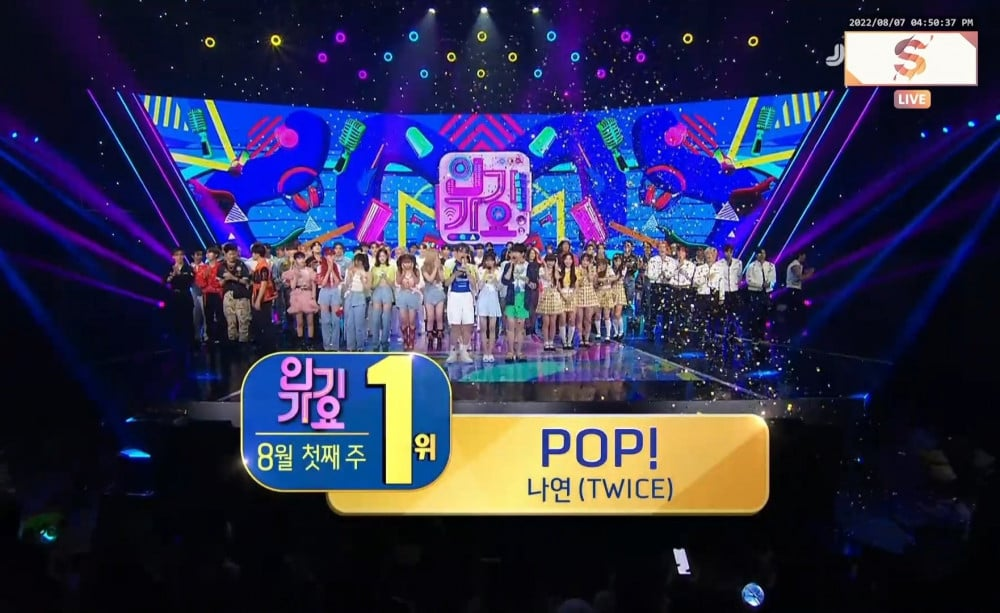

Achievements
1st Korean Soloist
To Chart Into TOP 10
Officially debuts at #7
on the Billboard 200

Im Na-yeon, lebih dikenal sebagai Nayeon, adalah seorang penyanyi asal Korea Selatan.
Setelah ikut serta dalam acara realitas berjudul Sixteen pada tahun 2015, ia terpilih menjadi anggota grup vokal wanita asal Korea Selatan, Twice, yang dibentuk oleh JYP Entertainment.
Twice (Hangul: 트와이스; Jepang: トゥワイス), adalah sebuah grup idola wanita asal Korea Selatan yang dibentuk oleh JYP Entertainment. Grup ini terdiri dari sembilan anggota: Nayeon, Jeongyeon, Momo, Sana, Jihyo, Mina, Dahyun,
Chaeyoung, dan Tzuyu. Twice dibentuk melalui sebuah program televisi berjudul Sixteen, dan melakukan debut mereka pada tanggal 20 Oktober 2015 dengan album mini bertajuk The Story Begins.
Twice meraih ketenaran pada tahun
2016 dengan lagu "Cheer Up" yang memuncaki peringkat pertama pada Gaon Digital Chart, dan menjadi singel terlaris pada tahun tersebut, dan memenangkan "Song of the Year" pada acara penghargaan Melon Music Awards dan Mnet Asian
Music Awards.Lagu mereka yang berikutnya, "TT", dari album mini ketiga bertajuk Twicecoaster: Lane 1, memuncaki tangga musik Gaon selama empat minggu berturut-turut. Album mini tersebut merupakan album grup idola wanita K-pop
terlaris untuk tahun 2016. Dalam kurun waktu 19 bulan setelah debut, Twice telah menjual lebih dari 1,2 juta kopi dari empat album mini dan satu album spesial mereka